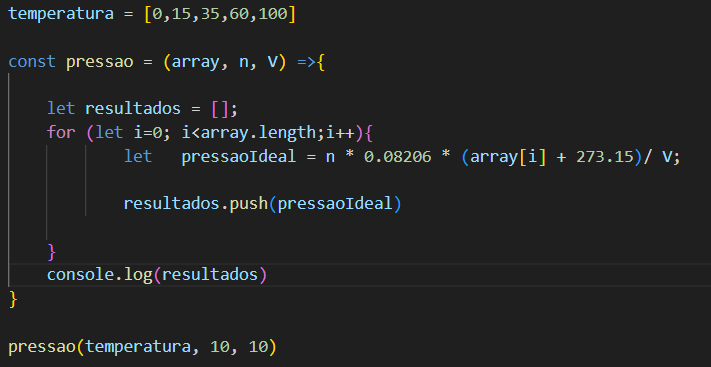
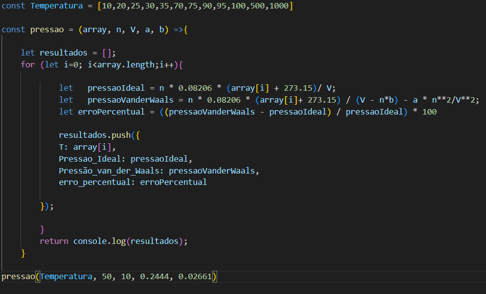
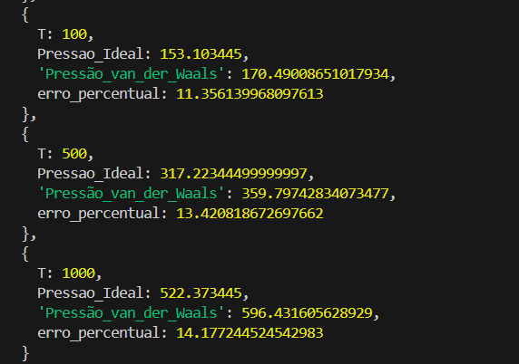
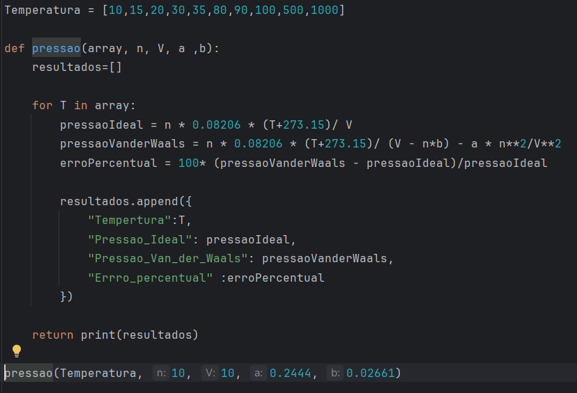

Nessa seção do Química Programada, o objetivo é demonstrar a utilização de estruturas de repetição para solução de um problema de engenharia química : verificar como a pressão de um gás descrito pela equação de van der Waals se afasta da pressão ideal à medida que a temperatura é aumentada, mantendo-se constantes o número de mols e o volume.
Para sua resolução, precismos criar uma função que receba como dados de entrada o número de mols n, o volume V , as constante de van der Waals a e b e um array com as temperaturas para as quais se deseja calcular a pressão. Essa função deverá percorrer o array de temperaturas e avaliar a pressao de gás ideal, a pressão de gás de van der Waals e o erro (a diferença entre as duas pressões).
Por fim, os valores de temperatura, as respectivas pressões e o erro deverão ser organizados e apresentados em uma estrutura de dados conveniente para posterior análise.
Para elaborar o algoritmo que resolve o problema proposto, é necessário combinar três conceitos fundamentais de programação: uma arrow function, uma estrutura de repetição do tipo for e um array de objetos para organizar os resultados.
A arrow function será responsável por receber os dados de entrada — como o array de temperaturas e os parâmetros do sistema — e executar os cálculos da pressão do gás ideal e da pressão do gás de van der Waals.
Uma arrow function é uma função anônima introduzida no JavaScript que permite declarar funções de forma mais compacta, utilizando a sintaxe =>. A Figura 1 apresenta a estrutura básica de uma arrow function aplicada ao cálculo da pressão de um gás ideal.
Dentro dessa função é utilizado um laço for, responsável por percorrer todo o array de temperaturas. O laço inicia na posição i = 0 e é executado até o último elemento do array (array.length). A cada iteração, o valor da temperatura é utilizado para recalcular a pressão do gás ideal.

Para armazenar os resultados obtidos em cada iteração, foi criado um array denominado resultados, inicializado com o comando let resultados = []. A cada passagem pelo laço for, esse array recebe um novo elemento por meio do comando resultados.push().
Quando há necessidade de armazenar mais de uma informação por temperatura, cada elemento do array pode ser um objeto. Essa estrutura é semelhante a um dicionário em outras linguagens e pode ser criada, por exemplo, com o comando resultados.push({A: 5, B: 6});.
Na Figura 2 é apresentada o algoritmo que possibilita o cálculo da pressão de gás ideal, pressão de gás de van der Waals e o erro como sendo a diferença entre a pressão de van der Waals menos a pressão do gás ideal dividido pela pressão de gás ideal.
As entradas da arrow function são o array de temperatura, o número de mols n, o volume V ocupado e as constantes de van der Waals a e b. Os valores das contante foram retirados da Wikipédia na página que pode ser acessada aqui. No exemplo que simulamos para teste do programa escolhemos o gás hidrogênio cujas contantes são a = 0,2444 e b = 0,02661.
Dentro do laço for temos três expressões a serem calculadas cada vez que o laço é percorrido : pressaoIdeal, pressaoVanderWaals e erro. No final com o comando push, o array de resultados é incrementado com um objeto de 4 dados : T[i], pressaoIdeal, pressaoVanderWaals e erro.

Na Figura 3 é apresentado um trecho da saída do resultado da execução da função para o gás hidrogênio. Pode-se ver que quando a temperatura aumenta, com mesmo volume e número de mols, aumenta a diferença entre a pressão de gás ideal e a pressão de gás de van der Waals. A pressão real pode ser maior ou menor que a ideal dependendo das condições e do balanço entre ae b . Para as condições simuladas, observa-se que a pressão calculada pela equação de van der Waals é ligeiramente superior à pressão ideal.

Na Figura 4 é apresentado o mesmo programa, mas agora executado em Python. A estrutura é muito semelhante. Criou-se uma função temperatura com um laço for interno. O comando para que a saída resultados seja incrementada a cada laço agora é feito através do comando resultados.append().

Desenvolvimento : Química Programada